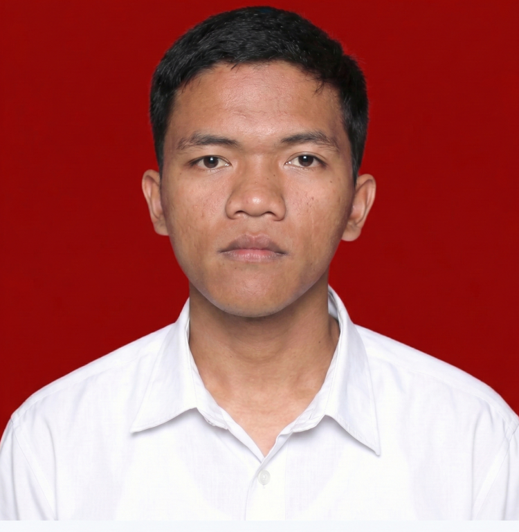

Halo, perkenalkan saya
Daniel Situmorang.
Saya membangun solusi melalui teknologi.
Mahasiswa Sistem Informasi di Institut Teknologi Del yang berfokus pada Software Engineering, Data Analysis, dan Web Development. Saya antusias dalam merancang sistem yang efisien dan menciptakan pengalaman digital yang inovatif.

Tentang Saya
Perjalanan saya di dunia teknologi didorong oleh rasa ingin tahu yang besar terhadap bagaimana sistem dibangun dan dioptimalkan. Sebagai mahasiswa semester 6 di Institut Teknologi Del, saya telah membangun fondasi yang kuat dalam pengembangan perangkat lunak, mulai dari analisis sistem, perancangan antarmuka (UI/UX), hingga implementasi kode.
Pengalaman saya sebagai Asisten Dosen Matematika selama dua semester telah menajamkan kemampuan berpikir analitis, komunikasi, serta pemecahan masalah saya dalam menjelaskan konsep yang kompleks. Saya terbiasa bekerja dalam lingkungan yang disiplin dan kolaboratif, serta selalu antusias untuk mempelajari teknologi baru.
Saat ini, saya sedang mencari peluang magang di perusahaan teknologi, BUMN, atau software house untuk berkontribusi secara nyata, mengembangkan keterampilan profesional, dan menjadi bagian dari tim yang inovatif.
S1 Sistem Informasi
Institut Teknologi Del (IPK: 3.52)
7+
Proyek Akademik & Praktikal
Keahlian Teknis
Programming
- Flutter & Dart
- Java (OOP)
- PHP & Laravel
- Python
- C Programming
- HTML/CSS/JS
Data & Database
- Database Design
- SQL
- ERD & Normalization
- Data Structures
Analisis Sistem
- Business Requirement
- BPMN
- UML Modeling
- Agile / Scrum
Tools & UI/UX
- Figma (Prototyping)
- Git & Version Control
- Flowgorithm
- User Story Definition
Proyek Pilihan
Aplikasi Mobile / Skala Prioritas
SUAR (Real-Time Incident Reporting System)
Sistem pelaporan insiden real-time yang dirancang untuk Kesatuan Pengelolaan Hutan (KPH XIII Dolok Sanggul) dalam manajemen bencana. Memungkinkan petugas lapangan dan masyarakat untuk melaporkan kebakaran hutan, banjir, dan longsor dengan melampirkan bukti visual serta titik koordinat otomatis.
- Peran: Mobile App Developer
- Dampak: Mempercepat respon penanganan bencana dengan pelacakan lokasi berbasis GPS yang akurat dan sistem pelaporan yang terintegrasi.
- Flutter
- Dart
- GPS Tracking
- API Integration
Aplikasi Web Berbasis Framework
Ulosta Web Application
Aplikasi web komprehensif yang dirancang untuk manajemen data terstruktur menggunakan framework Laravel. Sistem ini dilengkapi dengan fitur autentikasi pengguna yang aman, manajemen sesi, dan operasi CRUD penuh.
- Peran: Fullstack Web Developer
- Dampak: Menciptakan arsitektur aplikasi yang scalable menggunakan pola MVC (Model-View-Controller) dan integrasi database relasional yang efisien.
- Laravel
- PHP
- MySQL
- Tailwind/CSS
Manajemen Basis Data
RPS Management Database System
Perancangan dan implementasi skema basis data untuk sistem manajemen Rencana Pembelajaran Semester (RPS) di lingkup akademik.
- Peran: Database Designer
- Dampak: Memastikan integritas data dan meminimalkan redundansi melalui penerapan ERD yang solid dan teknik normalisasi basis data.
- SQL
- ERD
- Database Normalization
Desain Antarmuka
UI/UX Redesign: Rumah Kreatif Toba
Evaluasi heuristik dan mendesain ulang antarmuka aplikasi Rumah Kreatif Toba untuk meningkatkan pengalaman pengguna menjadi lebih intuitif dan modern.
- Peran: UI/UX Designer
- Dampak: Menghasilkan wireframe dan prototipe interaktif yang secara signifikan memperbaiki navigasi dan aksesibilitas pengguna akhir.
- Figma
- Wireframing
- Prototyping
Analisis Sistem
Informal Job Management System
Menganalisis kebutuhan perangkat lunak dan merancang model sistem untuk platform web pencarian dan pengelolaan pekerjaan sektor informal.
- Peran: System Analyst
- Dampak: Menyusun dokumen kebutuhan pengguna yang jelas dan memodelkan sistem melalui Use Case, Activity, dan Class diagram sebagai fondasi pengembangan.
- UML
- System Requirements
- Prototyping
Pengalaman
Asisten Dosen Matematika II
Institut Teknologi Del
Mengajar materi matematika tingkat lanjut seperti kalkulus peubah banyak, matriks, dan aljabar linear dasar. Membimbing mahasiswa dalam memahami konsep matematika yang diaplikasikan dalam pemrograman dan data science.
Anggota Divisi
Himpunan Mahasiswa Sistem Informasi (HIMSI IT Del)
Mengurus perizinan acara kemahasiswaan dan berkoordinasi dengan administrasi kampus. Membantu divisi lain dalam persiapan acara serta memfasilitasi komunikasi antar divisi untuk kelancaran kegiatan.
Asisten Dosen Matematika I
Institut Teknologi Del
Membantu proses pengajaran topik Kalkulus 1 (limit, turunan, integral). Memandu mahasiswa dalam sesi problem-solving untuk memperkuat kemampuan analitis dan kuantitatif mereka.
Pendidikan
S1 Sistem Informasi
Institut Teknologi Del, Laguboti
IPK Saat Ini: 3.52 / 4.00
Mata Kuliah Relevan: Systems Analysis and Design, Business Process Management, IT Project Management, UI/UX Design, Advanced Database Systems, Web App Development.
Sertifikasi
Python Course Completion
Kaggle
Menguasai sintaks Python, struktur data (lists, dictionaries), serta penggunaan library eksternal dasar untuk keperluan analisis data.
Langkah Selanjutnya
Mari Terhubung!
Saya selalu terbuka untuk mendiskusikan peluang magang, kolaborasi proyek, atau sekadar berbincang mengenai teknologi. Jika Anda mencari talenta yang adaptif dan siap berkontribusi, jangan ragu untuk menghubungi saya!